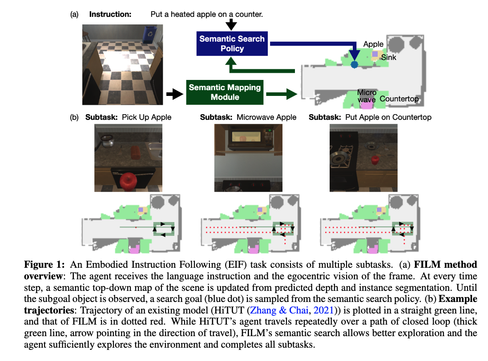
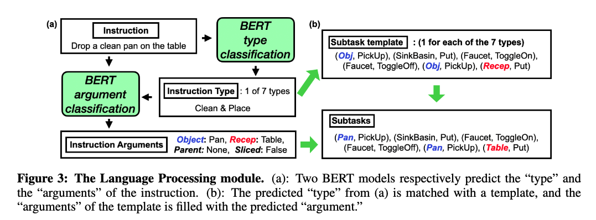

[TOC]
- Title: FILM: Following Instructions in Language With Modular Methods
- Author: So Yeon Min et. al.
- Publish Year: 16 Mar 2022
- Review Date: Wed, Feb 1, 2023
- url: https://arxiv.org/pdf/2110.07342.pdf
Summary of paper

Motivation
- current approaches assume that neural states will integrate multimodal semantics to perform state tracking, building spatial memory, exploration, and long-term planning.
- in contrast, we propose a modular method with structured representation that
- build a semantic map of scene and
- perform exploration with a semantic search policy, to achieve natural language goal.
Contribution
- FILM consists of several modular components that each
- processes language instructions into structured forms (language processing)
- converts egocentric visual input into a semantic metric map (Semantic Mapping)
- predicts a search goal location (Semantic Search Policy) ?
- subgoal will be plotted as a dot on the semantic top-down map
- outputs subsequent navigation/interaction actions (Deterministic Policy)
Some key terms
embodied instruction following
- the additional challenges posed by EIF are threefold
- the agent has to understand compositional instructions of multiple types and subtasks,
- choose actions from a large action space and execute them for longer horizons, and
- localize objects in a fine-grained manner for interaction.
- however, EIF remains a very challenging task for end-to-end methods as they require the neural net to simultaneously learn state-tracking, building spatial memory, exploration, long-term planning and low-level control.
Task Explanation
- ALFRED benchmark
- the agent has to complete household tasks given only natural language instructions and egocentric vision.
- Episodes run for a significantly longer number of steps compared to benchmarks with only single subgoals; even expert trajectories, which are maximally efficient and perform only the strictly necessary actions (without any steps to search for an object), are often longer than 70 steps.
- An episode is deemed “success” if the agent completes all sub-tasks within 10 failed low-level actions and 1000 max steps.
METHODS
- at the start of an episode, the Language Processing module receives the egocentric RGB frame and updates the semantic map, if the goal object of the current subtask is not yet observed, the semantic search policy predicts a “search goal” at a coarse time scale; until the next search goal is predicted, the agent navigates to the current search goal with the deterministic policy. If the goal is observed, the deterministic policy decides low-level controls for interaction actions (e.g., Pick Up object)
language processing module

- mapping natural language instruction into a structured template
- it seems that the instruction has to be semi-structured
- or it looks like we need extra training data to train the model